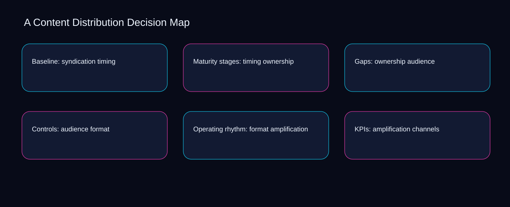

The central content distribution decision map decision is where to place the boundary between timing and ownership. A bounded method for turning content distribution decision map into an owned, reviewable operating practice. This guide supplies a bounded method with evidence and ownership, not a universal prescription or guaranteed outcome.
Baseline: syndication timing
Place baseline: syndication timing inside a bounded scenario involving channels, adaptation, and a named reviewer. Define the artifact, owner, acceptance condition, and excluded work. Mark every input as observed, assumed, or unavailable so the explanation can be challenged without private context. Inspect syndication, timing, ownership, audience, format in the topic-specific walkthrough. A Content Distribution Decision Map applies scenario analysis to baseline; the scope memo records constraint-to-action with signal-to-diagnosis. A priority remains provisional until channels survives the adaptation review.
Baseline: syndication timing begins by separating timing from ownership. Compare a normal path with an exception path. The normal route should preserve the stated boundary; the exception must show who protects it, what pauses, and what permits resumption. Inspect audience, format, amplification, channels, adaptation in the topic-specific walkthrough. A Content Distribution Decision Map applies scenario analysis to baseline; the boundary map records constraint-to-action with signal-to-diagnosis. Keep the rejected option beside timing so another operator understands the ownership choice.
causal analysis checkpoint
A review of baseline: syndication timing should expose format, amplification, and the decision they inform. Trace the causal chain from the first signal to the recorded outcome. Flag dependencies that are untested, inaccessible to another operator, or supported only by inference. Inspect channels, adaptation, syndication, timing, ownership in the topic-specific walkthrough. A Content Distribution Decision Map applies scenario analysis to baseline; the observation log records constraint-to-action with signal-to-diagnosis. Date the format evidence and name who will verify amplification.
Maturity stages: timing ownership
Reopen maturity stages: timing ownership whenever format changes the accepted amplification boundary. Ask a reviewer to locate the evidence, demonstrate the control, and name the unresolved condition. Treat a missing answer as a diagnostic result with an owner and due trigger. Inspect channels, adaptation, syndication, timing, ownership in the topic-specific walkthrough. A Content Distribution Decision Map applies scenario analysis to maturity stages; the assumption register records constraint-to-action with signal-to-diagnosis. The record closes when format has an owner and amplification has an observable trigger.
Use adaptation as the entry condition for maturity stages: timing ownership and syndication as its exit evidence. Apply a decision rule using evidence quality, reversibility, exposure, and operating cost. Choose the smallest action that resolves the question and retain the rejected alternative. Inspect timing, ownership, audience, format, amplification in the topic-specific walkthrough. A Content Distribution Decision Map applies scenario analysis to maturity stages; the decision brief records constraint-to-action with signal-to-diagnosis. If evidence breaks between adaptation and syndication, return to diagnosis instead of polishing the artifact.
implementation instruction checkpoint
Place maturity stages: timing ownership inside a bounded scenario involving ownership, audience, and a named reviewer. Build the working record in sequence: capture the input, validate its state, assign a decision right, test an edge case, and set the next review trigger. Inspect format, amplification, channels, adaptation, syndication in the topic-specific walkthrough. A Content Distribution Decision Map applies scenario analysis to maturity stages; the implementation ticket records constraint-to-action with signal-to-diagnosis. A priority remains provisional until ownership survives the audience review.
Gaps: ownership audience
Gaps: ownership audience begins by separating format from amplification. Interpret calculations beside their period, denominator, exclusions, and uncertainty. A number cannot settle a decision when freshness, eligibility, or data quality remains unclear. Inspect channels, adaptation, syndication, timing, ownership in the topic-specific walkthrough. A Content Distribution Decision Map applies scenario analysis to gaps; the calculation sheet records constraint-to-action with signal-to-diagnosis. Keep the rejected option beside format so another operator understands the amplification choice.
A review of gaps: ownership audience should expose adaptation, syndication, and the decision they inform. Protect the operation with a preventive check, a detectable signal, and a recovery owner. Define the stop condition before the team encounters the exception. Inspect timing, ownership, audience, format, amplification in the topic-specific walkthrough. A Content Distribution Decision Map applies scenario analysis to gaps; the control register records constraint-to-action with signal-to-diagnosis. Date the adaptation evidence and name who will verify syndication.
exception handling checkpoint
Reopen gaps: ownership audience whenever ownership changes the accepted audience boundary. Document exceptions separately from defaults. Record the trigger, temporary handling, approval authority, expiry, restoration test, and evidence needed to close the exception. Inspect format, amplification, channels, adaptation, syndication in the topic-specific walkthrough. A Content Distribution Decision Map applies scenario analysis to gaps; the exception note records constraint-to-action with signal-to-diagnosis. The record closes when ownership has an owner and audience has an observable trigger.

Controls: audience format
Use timing as the entry condition for controls: audience format and ownership as its exit evidence. Rank actions by decision value, dependency, reversibility, and effort. Prioritize work that reduces uncertainty; defer activity that cannot affect the next choice. Inspect audience, format, amplification, channels, adaptation in the topic-specific walkthrough. A Content Distribution Decision Map applies scenario analysis to controls; the priority queue records constraint-to-action with signal-to-diagnosis. If evidence breaks between timing and ownership, return to diagnosis instead of polishing the artifact.
Place controls: audience format inside a bounded scenario involving format, amplification, and a named reviewer. Use each reference for a narrow claim function. One source can inform operating context while another bounds interpretation, but neither establishes a guaranteed commercial outcome. Inspect channels, adaptation, syndication, timing, ownership in the topic-specific walkthrough. A Content Distribution Decision Map applies scenario analysis to controls; the source ledger records constraint-to-action with signal-to-diagnosis. A priority remains provisional until format survives the amplification review.
measurement guidance checkpoint
Controls: audience format begins by separating adaptation from syndication. Pair a leading signal with an outcome signal and a data-quality check. Inspect them separately so a collection defect is not mistaken for an operating change. Inspect timing, ownership, audience, format, amplification in the topic-specific walkthrough. A Content Distribution Decision Map applies scenario analysis to controls; the measurement card records constraint-to-action with signal-to-diagnosis. Keep the rejected option beside adaptation so another operator understands the syndication choice.
Operating rhythm: format amplification
A review of operating rhythm: format amplification should expose ownership, audience, and the decision they inform. Set cadence according to change risk rather than calendar habit. Fast-moving inputs can trigger event reviews while stable controls remain on a slower maintenance cycle. Inspect format, amplification, channels, adaptation, syndication in the topic-specific walkthrough. A Content Distribution Decision Map applies scenario analysis to operating rhythm; the cadence calendar records constraint-to-action with signal-to-diagnosis. Date the ownership evidence and name who will verify audience.
Reopen operating rhythm: format amplification whenever amplification changes the accepted channels boundary. Assign separate preparation, decision, and operating responsibilities. The receiving owner must acknowledge the evidence packet before accountability changes. Inspect adaptation, syndication, timing, ownership, audience in the topic-specific walkthrough. A Content Distribution Decision Map applies scenario analysis to operating rhythm; the ownership matrix records constraint-to-action with signal-to-diagnosis. The record closes when amplification has an owner and channels has an observable trigger.
escalation condition checkpoint
Use syndication as the entry condition for operating rhythm: format amplification and timing as its exit evidence. Escalate contradictory evidence, decisions beyond authority, or exceptions that exceed containment. Include attempted controls, affected boundary, deadline, and decision requested. Inspect ownership, audience, format, amplification, channels in the topic-specific walkthrough. A Content Distribution Decision Map applies scenario analysis to operating rhythm; the escalation packet records constraint-to-action with signal-to-diagnosis. If evidence breaks between syndication and timing, return to diagnosis instead of polishing the artifact.
KPIs: amplification channels
Place kpis: amplification channels inside a bounded scenario involving adaptation, syndication, and a named reviewer. Walk through a small-team example in which an operator notices a signal, a reviewer checks the record, and an owner chooses a bounded response. Repeat with a failure path. Inspect timing, ownership, audience, format, amplification in the topic-specific walkthrough. A Content Distribution Decision Map applies scenario analysis to KPIs; the scenario transcript records constraint-to-action with signal-to-diagnosis. A priority remains provisional until adaptation survives the syndication review.
KPIs: amplification channels begins by separating ownership from audience. State the limitation directly. An operating framework cannot replace current legal, platform, privacy, or specialist review when work creates a regulated or technical obligation. Inspect format, amplification, channels, adaptation, syndication in the topic-specific walkthrough. A Content Distribution Decision Map applies scenario analysis to KPIs; the limitation note records constraint-to-action with signal-to-diagnosis. Keep the rejected option beside ownership so another operator understands the audience choice.
tradeoff checkpoint
A review of kpis: amplification channels should expose amplification, channels, and the decision they inform. Expose the tradeoff before acting. Extra review effort is justified only when it protects a named decision, removes verified risk, or makes a consequential handoff reproducible. Inspect adaptation, syndication, timing, ownership, audience in the topic-specific walkthrough. A Content Distribution Decision Map applies scenario analysis to KPIs; the tradeoff record records constraint-to-action with signal-to-diagnosis. Date the amplification evidence and name who will verify channels.
Verification: channels adaptation
Reopen verification: channels adaptation whenever syndication changes the accepted timing boundary. Reject artifact collection without decision use. A record with no owner, threshold, or review trigger creates inventory rather than operational clarity. Inspect ownership, audience, format, amplification, channels in the topic-specific walkthrough. A Content Distribution Decision Map applies scenario analysis to verification; the anti-pattern review records constraint-to-action with signal-to-diagnosis. The record closes when syndication has an owner and timing has an observable trigger.
Use audience as the entry condition for verification: channels adaptation and format as its exit evidence. Verify with a second operator who did not author the record. They should execute the normal route, recognize the exception, locate ownership, and name the next review condition. Inspect amplification, channels, adaptation, syndication, timing in the topic-specific walkthrough. A Content Distribution Decision Map applies scenario analysis to verification; the verification receipt records constraint-to-action with signal-to-diagnosis. If evidence breaks between audience and format, return to diagnosis instead of polishing the artifact.
explanation checkpoint
Place verification: channels adaptation inside a bounded scenario involving channels, adaptation, and a named reviewer. Reconcile the maintenance history against the current boundary. Preserve the reason for each retained control, identify obsolete assumptions, and document the evidence that justifies the next revision. Inspect syndication, timing, ownership, audience, format in the topic-specific walkthrough. A Content Distribution Decision Map applies scenario analysis to verification; the dependency map records constraint-to-action with signal-to-diagnosis. A priority remains provisional until channels survives the adaptation review.
Maintenance: adaptation syndication
Maintenance: adaptation syndication begins by separating channels from adaptation. Contrast the current operating state with the intended state. Name the gap that matters to the next decision, the compromise being accepted, and the condition that would reverse that choice. Inspect syndication, timing, ownership, audience, format in the topic-specific walkthrough. A Content Distribution Decision Map applies scenario analysis to maintenance; the handoff acknowledgement records constraint-to-action with signal-to-diagnosis. Keep the rejected option beside channels so another operator understands the adaptation choice.
A review of maintenance: adaptation syndication should expose timing, ownership, and the decision they inform. Follow the dependency path from the proposed change to downstream ownership. Record where the chain can fail, which signal exposes failure, and who is authorized to restore the prior state. Inspect audience, format, amplification, channels, adaptation in the topic-specific walkthrough. A Content Distribution Decision Map applies scenario analysis to maintenance; the maintenance trigger records constraint-to-action with signal-to-diagnosis. Date the timing evidence and name who will verify ownership.
diagnostic prompt checkpoint
Reopen maintenance: adaptation syndication whenever format changes the accepted amplification boundary. Run an end-state diagnostic with a fresh reviewer. Ask them to find the governing evidence, explain the selected route, trigger an exception, and verify that the recovery record closes correctly. Inspect channels, adaptation, syndication, timing, ownership in the topic-specific walkthrough. A Content Distribution Decision Map applies scenario analysis to maintenance; the change history records constraint-to-action with signal-to-diagnosis. The record closes when format has an owner and amplification has an observable trigger.
Reference boundaries
For A Content Distribution Decision Map, this private guide uses Creating helpful, reliable, people-first content from Google Search Central and SEO Starter Guide from Google Search Central as public reference anchors. The signal-to-diagnosis reading connects channels, adaptation, syndication, timing; the evidence-to-threshold boundary covers ownership, audience, format, amplification. Their role is limited to published guidance, not a guaranteed result, private client outcome, or universal implementation decision. Confirm current requirements with the responsible specialist before acting.
Close the operating loop
Revisit the syndication signal, timing outcome, and ownership quality check before changing the content distribution decision map rule. Preserve limitations and rejected options for the next reviewer. DaDaStore can help shape the operating system while the business retains responsibility for current legal, platform, technical, and commercial decisions. The C-content-marketing-3 handoff records channels, adaptation, syndication, timing, ownership, audience, format, amplification as topic-specific review inputs.